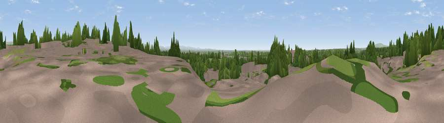

Viewpoint near Prestwich
#28483 in England · top 66% of its area beats it · near PrestwichThe view, rendered

A 360° render of this exact spot computed from the terrain model, tree cover and land cover — summer colours, afternoon light, calibrated against photographs of famous viewpoints. Real trees, hedges and buildings will differ in detail.
The panorama
Grey silhouette: terrain skyline in each direction (720 bearings, Earth curvature and refraction included). Dashed green: skyline with trees (+15 m) and buildings (+8 m) as obstacles. Blue strip: how far the ground is visible on each bearing.
Where the view opens
Wedge length = distance to the farthest visible ground on that bearing (vegetation-aware). Rings at 10, 25 and 50 km.
What fills the view
43% built-up · 39% woodland · 17% grassland
Angular shares of the visible panorama (visual magnitude), not map area. Landscape diversity 0.46 (0–1 Shannon).
Key numbers
More beautiful places nearby
The staircase of upgrades: each row has a higher view potential than everything closer. Driving times are estimates from straight-line distance, calibrated against real road routing — check an actual route before setting out.
| Place | Direction | Drive | Score |
|---|---|---|---|
| Viewpoint near Prestwich | ENE · 0 km | ~1 min | 47.3 |
| Viewpoint near Simister | ENE · 3 km | ~7 min | 49.5 |
| Clarke's Hill | NW · 3 km | ~8 min | 58.1 |
| Viewpoint near Heap Bridge | NNE · 6 km | ~13 min | 68.9 |
| Viewpoint near Limefield | N · 10 km | ~20 min | 71.0 |
| Viewpoint near Hazelhurst | NNW · 14 km | ~25 min | 75.1 |
| Viewpoint near Edenfield | N · 16 km | ~28 min | 77.5 |
| White Brow | WNW · 18 km | ~31 min | 82.9 |
53.52355, -2.28542 · source: screening · position refined by local search. Computed location — check access rights before visiting.